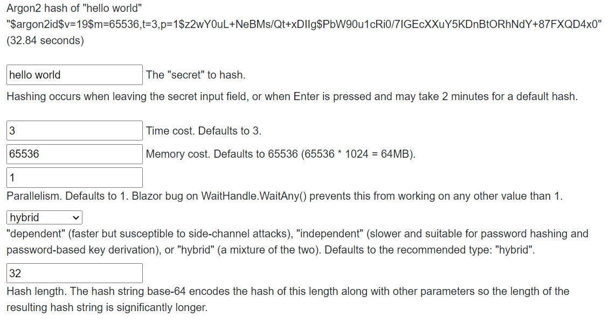

Argon2 with Blazor WebAssembly
You can use this library to calculate Argon2 hashes in the web browser. With the 6.0 dotnet SDK, the Blazor WebAssembly runs a lot slower than on the host - taking on the order of 3-5 times longer for a default hash on common hardware (this is the speed after publishing, it can take 10-20 times longer when debugging). This should improve as both dotnet improves and WebAssembly improves.
Even with the poor hashing performance in the browser, there may be use cases that require the server to never see the secret so performing a hash with reduced protection on the browser will be more secure than the alternative.
Note: when running in the browser, running with parallelism anything but
the default of 1 appears to hang in the hash calculation.
With Blazor, you typically assemble your pages with components. The following is a simple example demonstrating Argon2 in the browser.
Example
While you can call on Argon2 hashing and verifying directly from the razor code, this example tries to be a little more friendly in that it tells you when it is calculating the hash and disables the controls when it is doing so.
It builds a component that looks like this:

Example Source
index.razor:
@page "/"
@using Isopoh.Cryptography.Argon2
<PageTitle>Argon2</PageTitle>
<h3>@hashValue</h3>
<table>
<tr>
<td><input type="text" placeholder="hash text" disabled="@disabled" value="@secret" onchange="@(async (ChangeEventArgs args) => await Hash(args))"/></td>
<td>The "secret" to hash</td>
</tr>
</table>
@code {
private bool disabled;
private string? secret;
private string previousSecret = string.Empty;
private string hashValue = string.Empty;
private async Task Hash(ChangeEventArgs e)
{
try
{
disabled = true; // don't allow changes during hash calculation
this.secret =((string?)e.Value);
if (string.IsNullOrEmpty(this.secret) || this.secret == this.previousSecret)
{
this.secret = previousSecret;
return;
}
this.previousSecret = this.secret;
disabled = true;
hashValue = $"Calculating hash for \"{this.previousSecret}\"...";
this.hashValue = await Task.Run(() => Argon2.Hash(this.previousSecret));
}
finally
{
disabled = false;
}
}
}
The source for this example can be found at:
(github)TestBlazor.Client